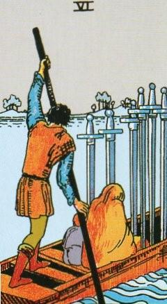
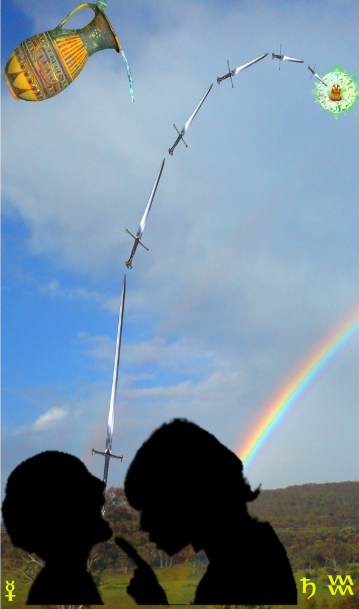
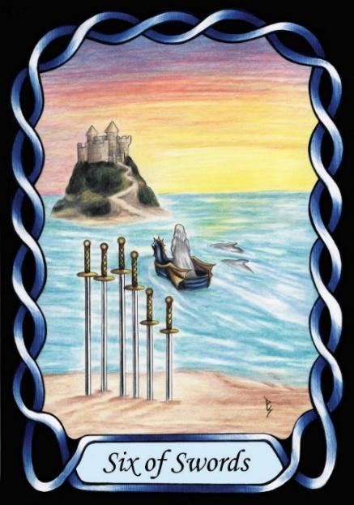

Six of Swords



Sign |
|
Eleven: Friends |
|
Sign Ruler |
|
Element |
Air: interaction |
Modality |
|
Symbol |
Water Carrier |
Decan |
|
Decan Ruler |
|
Time |
Jan 30 – Feb 8 |
Avoidance Aquarius II
A Journeyman in peers and friendship works diligently to earn respect and love from his peers, ruled by Saturn and Mercury. Saturn provides mental discipline, and an insatiable hunger for knowledge, whereas Mercury is about the need to communicate. The denizen needs freedom to express himself, and respect for what he expresses. When others disrespect him, or suppress his creativity and communication, he will quickly journey in search of a more receptive environment. This can be seen as avoidance as a coping mechanism for stressful situations. Attempting to discipline these people (aversion therapy) will quickly drive them away.
Goldschneider Personology
As the quintessential hippy, with a cry of “don’t hassle me, man”, they will block or shun stressful situations. They desire a life of peace, ease, and mellow happiness. When they do find their peace, they will indulge shamelessly in it.
RWS Imagery
A family leaves in a boat, moving to avoid an unpleasant situation, rather than stay and face it. Swords represent ideas or words, and so this can be seen as escape from a clash of ideologies.